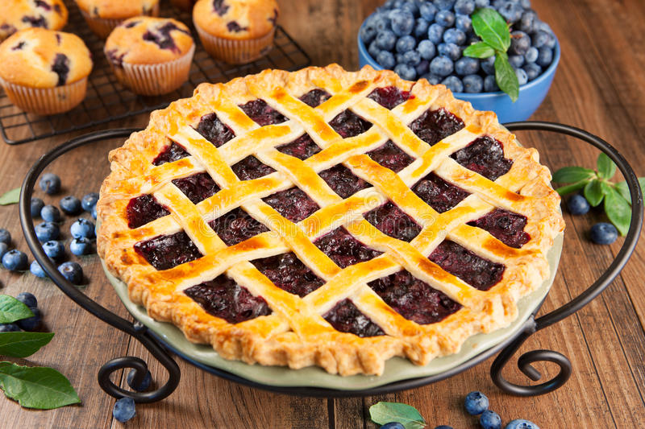

Blueberry Pie

Description
Blueberry pie has become a staple dessert for me, a quick and easy bake, the hardest part of this recipe is waiting for the pie to cool before digging in! Great with homemade or pre-bought crust, we're sure this recipe will blow you away!
Ingredients
- 4 to 6 cups (depending on pan size) fresh or frozen blueberries*
- 1 lemon (zest and 1 tsp juice)
- 1/4 cup corn starch (or all-purpose flour)
- 3/4 cup sugar
- 1/2 tsp cinnamon (optional)
- Pinch of Nutmeg (optional)
- 1 egg white, beaten
- 2 ready to bake pie crusts
Directions
- Remove pie crusts from refrigeratior, allow to warm to room temp (5 to 10min)Roll to desierd length if needed, place over 9in pie pan, allowing the edges to fall over the sides. Trim sides to about 1/2in over the edge.
- Preheat oven to 425°F
- Add blueberries, sugar, cornstarch (or flour), cinnamon, the zest and juice of the lemon, and (optional) cinnamon and nutmeg to a large bowl. Gently toss/stir ensuring every blueberry gets coated.
- Fill bottom pie crust with blueberry filling, lay the 2nd pie crust on top. Trim the top crust as needed, and tuck underneath the sides of the bottom crust. Cut slits in the top of the crust, large enough for the filling to breathe.**
- Brush the top of the pie crust with the beaten egg and coat evenly with a pinch of granulated sugar
- Bake for 20min at 425°F. Reduce heat to 350°F and bake for another 30 to 40min or until top is deeply golden brown.
- Allow to cool completely before serving.
Notes:
- *:If using fresh blueberries, be sure to wash and de-stem them. If using frozen, place blueberries in a fine mesh sieve (or strainer) and allow to thaw.
- **:Alternatively, you can crimp the edge crust between your finger and thumb for a more traditional look. For a lattace crust, simply cut the top crust into 10 evenly wide pieces, lay down 5, then alternate lifting 3 and 2 pieces, placing a length of crust beneath. It should be over 3 and under 2, or over 2 and under 3.